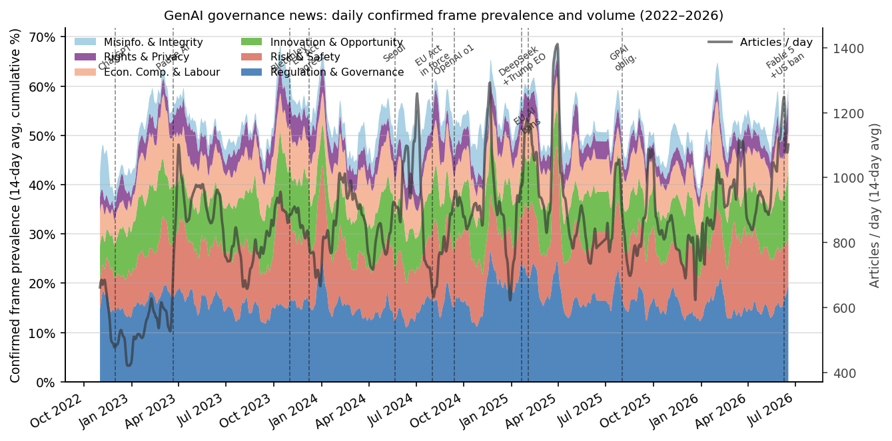
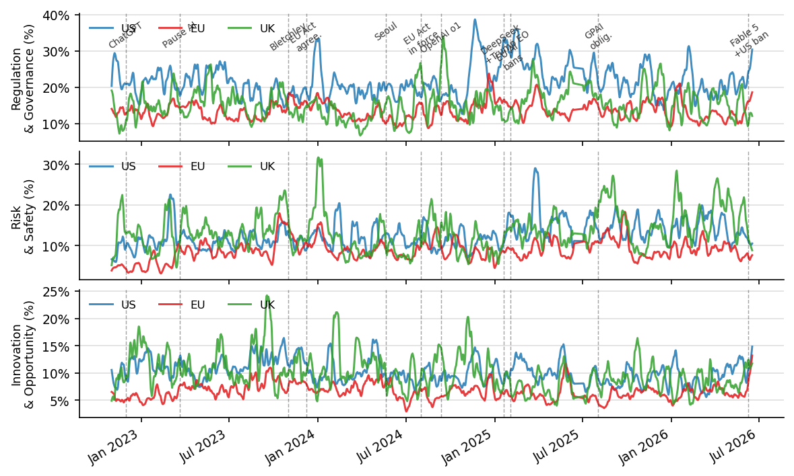

Abstract
The public release of ChatGPT in late 2022 rapidly transformed generative AI from a technological novelty into a central governance concern, prompting legislative activity, international summitry, and sustained public debate about regulation, safety, copyright, misinformation, and accountability. Online news plays a central role in shaping how these issues are publicly understood, making web-based news infrastructure a critical object of Web Science inquiry.
This paper presents the first large-scale longitudinal framing analysis of generative AI governance in online news. Drawing on 1,116,091 articles from the GDELT 2.0 Global Knowledge Graph, spanning November 2022 to June 2026, we apply a six-category governance frame taxonomy (Innovation & Opportunity, Risk & Safety, Regulation & Governance, Rights & Privacy, Economic Competition & Labour, and Misinformation & Integrity) via a two-stage procedure combining multilingual keyword matching and LaBSE sentence-embedding confirmation.
We document a discourse arc from optimism to precaution: Innovation framing peaks in February 2023 before retreating, while Risk & Safety rises steadily from 2024 onward. An event-study design across eight governance milestones reveals that media framing responds selectively and asymmetrically to policy events: high-profile intergovernmental summits suppress risk framing while amplifying governance vocabulary; civil-society alarm signals amplify risk without triggering governance-response coverage; and routine administrative deadlines produce no sustained framing shifts. Regional analysis shows US outlets are simultaneously the most regulation-intensive and innovation-positive, while EU outlets exhibit proportionally higher risk framing relative to their regulation share. These findings contribute to Web Science and computational social science by demonstrating how web-based news infrastructures construct and transform public discourse around the governance of emerging AI technologies.
Key Findings
News articles from 44 months (Nov 2022 – Jun 2026) across 100+ languages via GDELT 2.0, with a 50.7% governance filter yielding the analysis corpus.
Innovation & Opportunity peaks at 13.1% — the apex of post-ChatGPT optimism — before retreating as Risk & Safety climbs to 20%+ by 2024.
The Bletchley Summit suppressed risk framing (−4.9 pp) while the Pause AI letter amplified it (+1.5 pp) without triggering governance-response coverage.

Figure 1. Daily confirmed frame prevalence (14-day rolling mean, stacked area) and total articles per day. Regulation & Governance dominates throughout; Risk & Safety rises sharply from 2024; Innovation & Opportunity retreats after its February 2023 peak. Vertical lines mark eight governance milestones.

Figure 2. Daily confirmed frame prevalence for US, EU, and UK outlets (14-day rolling mean). US regulation framing diverges sharply upward from 2024; EU risk framing tracks closely with the UK throughout the study period.
Data & Code
The dataset has three configurations: articles (1,116,091 rows — document URL,
month, region, 6 keyword flags, 6 LaBSE embedding scores, dominant frame),
event_studies (22-row milestone summary), and aggregates
(monthly/regional/tone summaries). Load with
datasets.load_dataset("brewcoua/genai-gdelt-framing", "articles").
Released under CC-BY 4.0.
Citation
@inproceedings{couaran_framing_2026,
title = {Framing Generative {AI} Governance in Online News:
A Longitudinal Analysis of 1.1 Million Articles (2022--2026)},
author = {Couaran, Brewen},
year = {2026},
url = {https://github.com/brewcoua/GenAI-GDELT},
}